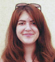
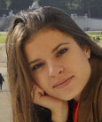
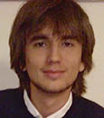
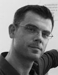

S3 Požega 2014 (12. srpnja - 1. kolovoza): PROGRAM
PROJEKTI
- Krivulja rasta: put do strukture zvijezde
- Može li srce biti slomljeno?
- Električni šokovi i kockanje: vodikova veza
- Robotski sistem za izbjegavanje prepreka
- Voda i kamen: smrtonosna kombinacija
RADIONICE
PREDAVANJA
PROJEKTI
Krivulja rasta: put do strukture zvijezde
 Kako su uvjeti u kojima je zvijezda nastala utjecali na svjetlost koju primamo od te zvijezde? Na osnovu karakteristika emitirajuće svjetosti mogu se procijeniti zvjezdani parametri. Formiranje zvijezda je važan dio zvjezdane evolucije. Ako znamo u kakvim je uvjetima zvijezda nastala, moguće je predvidjeti njezin život. Napretkom tehnologije, astronomi su sada u mogućnosti simulirati razne procese, a jedan od njih je konstrukcija sintetičkih spektara zvijezda. Na osnovu njih možemo odrediti uvjete nastanka zvijezde.
Kako su uvjeti u kojima je zvijezda nastala utjecali na svjetlost koju primamo od te zvijezde? Na osnovu karakteristika emitirajuće svjetosti mogu se procijeniti zvjezdani parametri. Formiranje zvijezda je važan dio zvjezdane evolucije. Ako znamo u kakvim je uvjetima zvijezda nastala, moguće je predvidjeti njezin život. Napretkom tehnologije, astronomi su sada u mogućnosti simulirati razne procese, a jedan od njih je konstrukcija sintetičkih spektara zvijezda. Na osnovu njih možemo odrediti uvjete nastanka zvijezde.
 Dušan Vukadinović
Dušan Vukadinović
Sveučilište u Beogradu, Srbija
Dušan je student astrofizike na Sveučilištu u Beogradu. Za vrijeme srednje škole učestvovao je na seminaru astronomije na kojem je realizirao tri projekta. Osim za astrofiziku, zainteresiran je za očuvanje energije (sunčeve energije). Osim znanosti Dušan voli biciklizam, duge šetnje uz duge razgovore, glazbu i ples, kuhanje i još mnoge zanimljive stvari.
Može li se srce biti slomljeno?
 Tijekom povijesti, ljudsko srce je služilo kao simbol života, ljubavi, inteligencije, emocija i razuma. U jednom trenutku filozofi su čak vjerovali da je srce, a ne mozak, organ svijesti. Zahvaljujući znanosti, danas znamo neke zapanjujuće činjenice o važnosti i funkciji srca. Od trenutka kad srce započne kucati do trenutka prestanka, ljudsko srce radi neumorno.To je vitalni organ, karakterizan s protokom električnog impulsa iz jednog dijela srca u drugi. Ovi impulsi uzrokuju kontrakciju i opuštanje srca, pumpanje krvi u tijelo i vitalne organe. Neprirodni električni impulsi uzrokuju presporo, prebrzo ili nejednoliko kucanje srca. Srčane mane su jedne od najčešćih bolesti među ljudima, pogotovo onima starije dobi. Stoga, za znanost je važno razumijevanje mehanizama normalnog rada srca.
Tijekom povijesti, ljudsko srce je služilo kao simbol života, ljubavi, inteligencije, emocija i razuma. U jednom trenutku filozofi su čak vjerovali da je srce, a ne mozak, organ svijesti. Zahvaljujući znanosti, danas znamo neke zapanjujuće činjenice o važnosti i funkciji srca. Od trenutka kad srce započne kucati do trenutka prestanka, ljudsko srce radi neumorno.To je vitalni organ, karakterizan s protokom električnog impulsa iz jednog dijela srca u drugi. Ovi impulsi uzrokuju kontrakciju i opuštanje srca, pumpanje krvi u tijelo i vitalne organe. Neprirodni električni impulsi uzrokuju presporo, prebrzo ili nejednoliko kucanje srca. Srčane mane su jedne od najčešćih bolesti među ljudima, pogotovo onima starije dobi. Stoga, za znanost je važno razumijevanje mehanizama normalnog rada srca.
 Mislav Omerbašić
Mislav Omerbašić
Medicinski fakultet, Sveučilište u Zagrebu
Mislav je student 2. godine medicine na Sveučilištu u Zagrebu. Sudjelovao je dva puta kao polaznik na S3++ programima Ljetne škole znanosti. 2013. godine je vodio swapshop radionicu u Požegi. Mislav je uvijek otvoren za učenje novih stvari te uvijek biva fasciniran novim otkrićima. Uživa u gledanju znanstvenih videa i čitanju znanstvenih članaka. U slobodno vrijeme Mislav se voli družiti s prijateljima, gledati filmove i igrati video igrice.
Električni šokovi i kockanje: vodikova veza
 Vodikove veze su kemijske veze između vodikovog atoma i atoma pohlepnijim za elektronom koji nije kemijski vezan za prvi atom koje još uvijek nisu dobro proučene. Te veze su od veoma velike važnosti za nas, živuće forme. Razlog tomu je voda koja zbog svoje sposobnosti formiranja vodikovih veza nije plin na sobnoj temperaturi već tekućina u kojoj se mogu odvijati biološki procesi. Vodikova veza drži našu biološku osobnu iskaznicu, DNA, u jednom komadu, te omogućava elastičnost i snagu najlonskih čarapa. Uzrok je sposobnosti prianjanja ljepila, te dobrog mješanja etanola i vode u pivu.
Vodikove veze su kemijske veze između vodikovog atoma i atoma pohlepnijim za elektronom koji nije kemijski vezan za prvi atom koje još uvijek nisu dobro proučene. Te veze su od veoma velike važnosti za nas, živuće forme. Razlog tomu je voda koja zbog svoje sposobnosti formiranja vodikovih veza nije plin na sobnoj temperaturi već tekućina u kojoj se mogu odvijati biološki procesi. Vodikova veza drži našu biološku osobnu iskaznicu, DNA, u jednom komadu, te omogućava elastičnost i snagu najlonskih čarapa. Uzrok je sposobnosti prianjanja ljepila, te dobrog mješanja etanola i vode u pivu.
 Edi Topić
Edi Topić
PMF, Sveučilište u Zagrebu
Edi je student 2. godine kemije na Sveučilištu u Zagrebu. Zanimaju ga kemija materijala i anorganska kemija, ali i fizika te sve vrste eksperimentalnih znanosti. Edi je prošle godine vodio projekt na Ljetnoj školi znanosti (S3), bio je mentor na 21.-oj Ljetnoj školi računarstva te je dobitnik dviju brončanih medalja na Međunarodnoj kemijskoj olimpijadi u Ankari i Washingtonu. U svoje slobodno vrijeme Edi voli "uradi sam" projekte, kuhanje i sviranje gitare.
Robotski sistem za izbjegavanje prepreka
 Svi smo svjesni prisustva različitih vrsta elektroničkih uređaja u našoj svakodnevnici, ali jeste li se ikad zapitali kako oni rade? Što omogućava telefonima da prenesu nečiji glas, zrakoplovima da sigurno lete, hladnjacima da zadrže hranu ohlađenom? Svi ovi složeni sustavi su sastavljeni od ugrađenih sistema. Ugrađeni sistemi su inženjersko područje koje proučava principe dizajna elektroničkih sistema koji su ugrađeni u neki veći sistem i dizajnirani tako da obavljaju određenu funkciju. Jezgra ugrađenih sistema je najčešće elektronički uređaj, mikrokontroler, čiji je zadatak kontroliranje ugrađenih sistema. Područje robotike se veoma oslanja na dizajn ugrađenih sistema jer su mnogi djelovi robota sami po sebi ugrađeni sistemi. Svakom sofisticiranom robotu je potreban sistem za navigaciju kroz nepoznato okruženje kako bi se ispunili i neki drugi zadaci. Sistem za izbjegavanje prepreka je osnovna komponenta navigacijskog sistema robota.
Svi smo svjesni prisustva različitih vrsta elektroničkih uređaja u našoj svakodnevnici, ali jeste li se ikad zapitali kako oni rade? Što omogućava telefonima da prenesu nečiji glas, zrakoplovima da sigurno lete, hladnjacima da zadrže hranu ohlađenom? Svi ovi složeni sustavi su sastavljeni od ugrađenih sistema. Ugrađeni sistemi su inženjersko područje koje proučava principe dizajna elektroničkih sistema koji su ugrađeni u neki veći sistem i dizajnirani tako da obavljaju određenu funkciju. Jezgra ugrađenih sistema je najčešće elektronički uređaj, mikrokontroler, čiji je zadatak kontroliranje ugrađenih sistema. Područje robotike se veoma oslanja na dizajn ugrađenih sistema jer su mnogi djelovi robota sami po sebi ugrađeni sistemi. Svakom sofisticiranom robotu je potreban sistem za navigaciju kroz nepoznato okruženje kako bi se ispunili i neki drugi zadaci. Sistem za izbjegavanje prepreka je osnovna komponenta navigacijskog sistema robota.
 Miloš Stojanović
Miloš Stojanović
Sveučilište u Beogradu, Srbija
Miloš je student 2. godine Fakulteta elektrotehnike i računarstva u Beogradu. Zanimaju ga područja obrade signala, automatske kontrole i ugrađenih sistema. Završio je nekoliko projekata koji uključuju spomenuta područja u Istraživačkom Centru Petnica u Srbiji, gdje pomaže srednjoškolcima da učine svoje prve korake u znanosti na seminaru Primjenjene Fizike i Elektronike. U slobodno vrijeme Miloš uživa u sviranju klavira i druženju sa prijateljima.
Voda i kamen: smrtonosna kombinacija
 Zemlja je umjetno podijeljena u različite sfere, od onih koje opskrbljuju životinje i biljke s potrebnim plinovima poput kisika i ugljikovog dioksida, do sfera koje omogućuju živim bićima da hodaju i plivaju poput litosfere i hidrosfere. Ne samo da su sva živa bića povezana kroz takozvane sfere, već su i same sfere povezane i međusobno ovisne. Njihov sastav podložan je konstantnoj promjeni jer je Zemlja dinamički ekosustav čiji uvjeti se mijenjaju kroz vrijeme i prostor.
Zemlja je umjetno podijeljena u različite sfere, od onih koje opskrbljuju životinje i biljke s potrebnim plinovima poput kisika i ugljikovog dioksida, do sfera koje omogućuju živim bićima da hodaju i plivaju poput litosfere i hidrosfere. Ne samo da su sva živa bića povezana kroz takozvane sfere, već su i same sfere povezane i međusobno ovisne. Njihov sastav podložan je konstantnoj promjeni jer je Zemlja dinamički ekosustav čiji uvjeti se mijenjaju kroz vrijeme i prostor.
 Bojan Karaica
Bojan Karaica
Hrvatsko herpetološko društvo HYLA, Zagreb
Bojan je stekao diplomu u području geologije okoliša na Odsjeku geologije Prirodoslovno-matematičkog fakulteta Sveučilista u Zagrebu. U prethodnoj godini radio je kao pripravnik, pretežno u širem području Grada Zagreba te na kršnoj obali istočnog Jadrana gdje je radio na projektima vezanim uz nabavku vode, praćenje i promatranje podzemnih voda, definiranje sanitarnih zaštitnih zona i geoloških nepogoda. Bojan uživa u planinarenju, otvorenom prostoru, plesanju i jedrenju.
Montessori edukacija o Svemiru
 Bit Montessori edukacije je jednostavno briga o djetetu, kojem se omogućuje da ispuni sav svoj potencijal. Danas, više nego ikada, trebamo mlade ljude koji znaju kritički razmišljati, ambiciozni su i poduzetni. Po završetku ove radionice, sudionici će biti bolje pripremljeni za izazove budućnosti, samopouzdani, puni znanja i želje za novim znanjima. Kao i u svim procesima učenja, tako i u ovoj Montessori radionici Edukacija o Svemiru, počinje se s "Glavnim lekcijama" - impresionističke znanstvene priče prezentirane na način koji polaznicima pruži "širu sliku" i objedini astronomiju, znanost o Zemlji, geografiju, kemiju, fiziku, biologiju, povijest, kulturne i socijalne studije, jezik, matematiku, glazbu i ostale umjetnosti. Stvarno učenje se događa kada su učenici inspirirani lekcijom i nadahnuti za samostalno istraživanje i učenje, što se želi postići ovom radionicom. Sudionicima ove radionice bit će predstavljen primjer uzastopnih lekcija koje će im pružiti ključ za daljnje, detaljnije, istraživanje ovih područja ljudskog znanja, čiji rezultat će biti zajednički razvoj didaktičkih materijala temeljen na Montessori principima učenja.
Bit Montessori edukacije je jednostavno briga o djetetu, kojem se omogućuje da ispuni sav svoj potencijal. Danas, više nego ikada, trebamo mlade ljude koji znaju kritički razmišljati, ambiciozni su i poduzetni. Po završetku ove radionice, sudionici će biti bolje pripremljeni za izazove budućnosti, samopouzdani, puni znanja i želje za novim znanjima. Kao i u svim procesima učenja, tako i u ovoj Montessori radionici Edukacija o Svemiru, počinje se s "Glavnim lekcijama" - impresionističke znanstvene priče prezentirane na način koji polaznicima pruži "širu sliku" i objedini astronomiju, znanost o Zemlji, geografiju, kemiju, fiziku, biologiju, povijest, kulturne i socijalne studije, jezik, matematiku, glazbu i ostale umjetnosti. Stvarno učenje se događa kada su učenici inspirirani lekcijom i nadahnuti za samostalno istraživanje i učenje, što se želi postići ovom radionicom. Sudionicima ove radionice bit će predstavljen primjer uzastopnih lekcija koje će im pružiti ključ za daljnje, detaljnije, istraživanje ovih područja ljudskog znanja, čiji rezultat će biti zajednički razvoj didaktičkih materijala temeljen na Montessori principima učenja.
Voditelj radionice: Luka Vuković (Montessori škola u Zagrebu, Hrvatska)
Research Swapshop
Kvantne točke
Kvantna točka je nanočestica napravljena od poluvodiča koja je dovoljno malena da bi imala kvantnomehanička svojstva. Navedena svojstva su na međi svojstava makroskopskih poluvodiča i molekula. Fascinantno je da su ta svojstva direktno povezana s veličinom kvantnih točaka, koja se može lako ugoditi prilikom sinteze. Danas se kvantne točke koriste u razvoju poluvodiča, medicine i raznim drugim područjima. Polaznici ove radionice imat će priliku sintetizirati kvantne točke, te učiti o strukturi čvrstog stanja, kvantnoj mehanici i spektroskopiji.

Voditeljica radionice:
Nea Baus (Prirodoslovno-matematički fakultet, Zagreb, Hrvatska
Kako saznati tajne Svemira?
Najlijepši rezultati moderne istraživačke astronomije su svakako brojne predivne slike svemirskih tijela, snimljene sa Zemlje ili iz svemira. Zašto su te fotografija tako bitne astronomima? Zato što skoro sve informacije koje imamo o svemiru su proizašle iz svojstva svjetlosti. A kako astronomi detektiraju i analiziraju svjetlost? Ova radionica će dati uvod u metode astronomskih opažanja. Sudionici će imati priliku koristiti simulacije instrumenata, te analizirati i interpretirati podatke prikupljene promatranjima. Na ovaj način moći će vidjeti strukture, saznati temperaturu, veličinu i ostale karakteristike promatranih tijela. Sudionici će još saznati i koja se promatranja mogu obavljati i najjednostavnijim, kućnim teleskopom, a ipak dobiti vrijedne i točne informacije.

Voditeljica radionice:
Ana Bogdanović (Znanstveni centar "Petnica", Srbija)
Arahnologija - adaptacija pauka na okoliš
Pauci su oduvijek bili u fokusu ljudi, prvih kroz priče i mitologiju, a kasnije kroz znanost. Istraživanja pauka povećala su ljudsko znanje, prije svega o otrovima i proizvodnji svile te tako doveli do razvoja novih tehnoligija i lijekova. Budući da su gotovo svi pauci grabežljivci, njihovi različiti načini lova i hvatanja plijena, stil života te obilk i boja tijela predstavljaju adaptacije na okoliš u kojem žive. Sve to dovodi do komplikacija kada pokušavamo objasniti evoluciju i kako su neke stvari moguće, čak i u ovom malom ekosustavu kojim vladaju kukci. Cilj ove radionice je objasniti općenito evoluciju i prilagodbe na okoliš životinja, kroz primjere najuobičajenijih hrvatskih vrsta pauka. Nadalje, radionica će polaznicima pokušati približiti čime se zoolozi bave i zašto te pokazati bogatu raznolikost vrsta pauka na relativno malom području.
Voditelj radionice:
Domagoj Gajski (Prirodoslovno-matematički fakultet, zagreb, Hrvatska)
Informatička revolucija u svijetu znanosti
Nemoguće je zamisliti današnji svijet bez računala i sofisticiranih softverskih alata koji nam svakodnevno olakšavaju život. Informatika je svoju primjenu također našla i u skoro svim disciplinama u znanosti, te su kroz primjenu informatičkih pristupa na različita znanstvena polja nastale nove discipline kao što su bioinformatika, ekoinformatika, geoinformatika i mnoge druge. Na taj način pridodana je nova dimenzija procesu znanstvenog istraživanja. No, mnogi novo dizajnirani programi našli su svoju primjenu izvan znanosti, npr. u edukaciji i raznim dijelovima svakodnevnog života. Primjerice, danas rijetko tko posjeduje mobilni telefon ili računalo bez GPS-a, kojije nastao kao produkt razvoja geoinformatike. Ova radionica poslužit će kao teorijski i praktični uvod upravo u takvu primjenjenu informatiku.

Voditelj radionice:
Hrvoje Mišerić (Prirodoslovno-matematički fakultet, Zagreb, Hrvatska)
Svijet proteina: gdje red i kaos supostoje
Proteini, kao prirodno raznovrsna skupina molekula, posjeduju iznimnu važnost za znanstvene discipline kao što su biokemija, biofizikai molekularna biologija, dok je njihovo proučavanje također važno i za neke od grana industrijskog sektora. Kroz drugu polovicu dvadesetog stoljeća, istraživanja unutar znanosti o proteinima naglo su uznapredovala zahvaljujući razvoju novih eksperimentalnih pristupa za proučavanje makromolekula. Ogromne količine novo dostupnih podataka o strukturi i funkciji proteina nadalje su korištene u studijama unutar drugih područja, imajući posebno značenje za istraživanja u medicini i farmaciji. No, tijekom posljednjeg desetljeća, pokušaji karakterizacije proteinskih struktura doveli su do otkrića proteina koji su sposobni funkcionirati bez stabilne, potpuno formirane 3D strukture. Ovi nalazi su se isprva smatrali pogrešnima jer su prkosili ustaljenoj paradigmi prema kojoj je struktura proteina ono što definira njegovu funckiju, no naposlijetku su potvrđeni, uzrokujući revoluciju u strukturalnoj biologiji te osnutak područja NNPa - nativno neuređenih proteina. U ovoj radionici polaznici će prikupiti teoretsko znanje i o ovim čudesnim dijelovima svakog živog bića.

Voditeljica radionice:
Ingrid Tomljanović (Prirodoslovno-matematički fakultet,Zagreb, Hrvatska)
Priroda u ravnoteži - sa zrnom soli
Kemijska ravnoteža jedna je od temeljnih pojava u kemiji. Postoji bezbroj prirodnih sustava koji su ili u ravnoteži ili joj teže. Mi, kao i svi ostali živi organizmi, ovisimo o kemijskoj ravnoteži zbog njene uloge u regulaciji procesa koji su od vitalne važnosti za naš organizam. Uz to, shvaćanje načela ravnoteže važno je i zbog praktičnih razloga, jer se na njoj temelje procesi kaošto su industrijska proizvodnja amonijaka, izolacija komponenata izsmjesa i neke medicinske pretrage. Uravnoteženi procesi su svuda oko nas - u običnoj čaši vode sadržan je više od jednog, a ako ih uspijemo razumjeti, počet ćemo promatrati prirodu, i nas kao dio nje, drugim očima. Ova radionica će se usredotočiti na predstavljanje zakona kemijske ravnoteže kroz kratko predavanje i niz pokusa sa topljivim i netopljivim solima što uključuje i mjerenje svojstava zasićenih otopina. Nakon samostalnog izvođenja nekoliko jednostavnih pokusa i davanja odgovarajućeg objašnjenja za njih, polaznici će prikupiti nova saznanja koja će im biti korisna za daljnje školovanje i znatno im olakšati shvaćanje ravnoteže.

Voditelj radionice:
Lovro Trgovec-Greif (Prirodoslovno-matematički fakultet, Zagreb, Hrvatska)
RASPORED PREDAVANJA
25. srpnja 2014.
Dunja Potočnik (Institut za društvena istraživanja, Hrvatska): Uzori, novac i slava: Utječu li na izbor karijere (u znanosti)?
30. srpnja 2014.
Bojan Žagrović (Sveučilište u Beču, Austrija): O porijeklu univerzalnog genetičkog koda
O PREDAVAČIMA
Dunja Potočnik je znanstvena suradnica na Institutu za društvena istraživanja u Zagrebu. Doktorirala je sociologiju na Sveučilištu u Zagrebu. Član je Steering odbora na Institutu za sinergiju znanosti i društva gdje vodi projekte iz područja popularizacije znanosti i politički usmjerenih istraživačkih projekata. Njezino znanstveno djelovanje ukljućuje teme kao što su: zapošljavanje mladih, općenito politika mladih, mladi i nove tehnologije te društvene strukture i sociologija poslova/karijera. Dunja je bila aktivan član odbora vezanih uz znanost, edukaciju i politiku mladih unutar Europske komisije i Vjeća Europe. Ima bogato iskustvo u uspostavljanju i vođenju nacionalnih i internacionalnih navladinih organizacija unutar znanstvenog djelovanja.
Bojan Žagrović, rodom iz Hrvatske, diplomirao je na području biokemije na Sveučilištu Harvard te doktorirao na području biofizike na Sveučilištu Stanford. Tamo je bio jedan od utemeljitelja Folding@Home projekta u grupi Vijay S. Panda. Poslije postdoktorskog studija na ETH u Zürichu, u grupi Wilfreda F. von Gunsterena, i trogodišnjeg vođenja grupe na Mediteranskom institutu za istraživanje života u Splitu, postao je voditelj grupe u Max F. Perutz laboratoriju na Sveučilištu u Beču 2010. godine, gdje vodi Laboratorij računalne biofizike. Bojanovi znanstveni interesi obuhvaćaju različita područja računalne biofizike, uključujući protein-RNA interakcije, posttranslacijske modifikacije i konformacijsko usrednjivanje u strukturnoj biologiji.
Copyright © 2014 Društvo za edukaciju van okvira (EVO). Sva prava pridržana.
Web dizajn: Martina Mijušković. Općeniti tekst: Branimir Lukić i Martina Mijušković. Prijevod na hrvatski: Matilda Maleš.